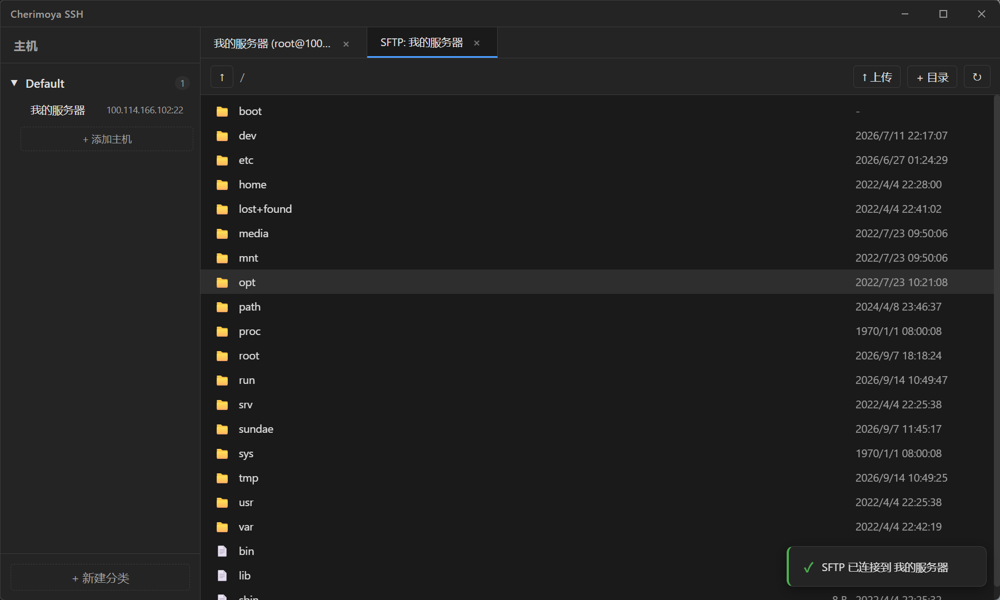
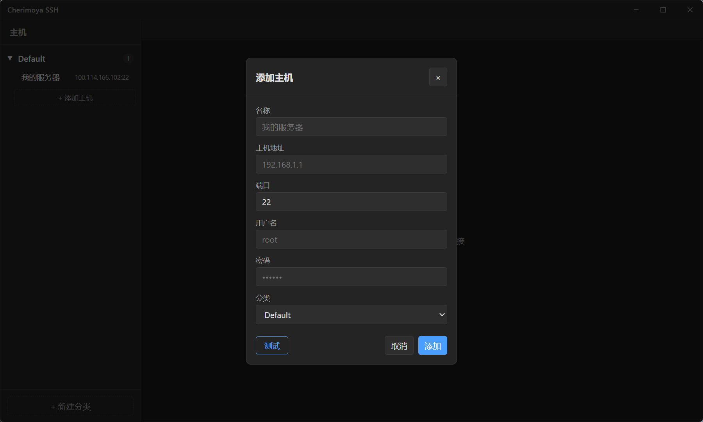
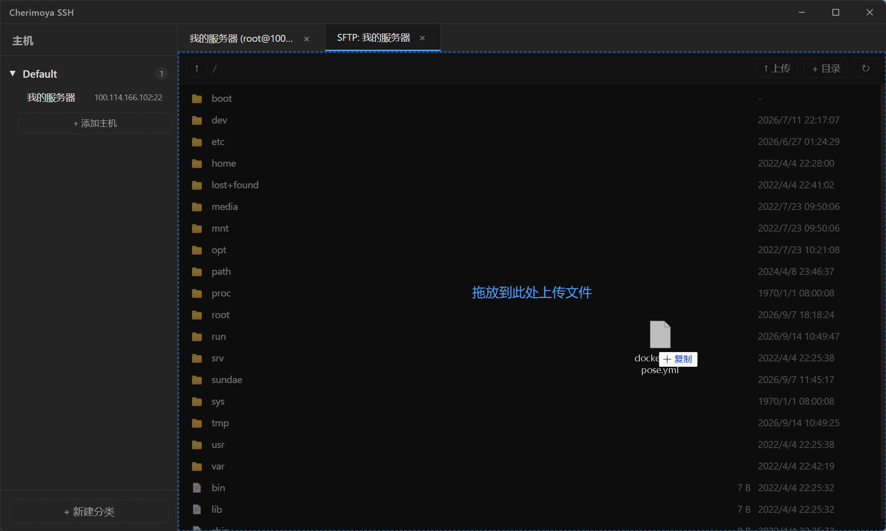

主机分组管理
按类别整理服务器，添加、编辑、删除都在侧边栏完成。配置自动写入本地 hosts.json，重装也不丢。
日常运维真正会用到的那几件事，都做完了。
按类别整理服务器，添加、编辑、删除都在侧边栏完成。配置自动写入本地 hosts.json，重装也不丢。
同时打开多个 SSH 会话，标签页之间自由切换，互不干扰。右键标签页还能直接复制出一个同样的连接。
终端旁边直接浏览远程目录，上传下载不用另开工具。浏览、建目录、删除都在同一个面板里。
把文件拖进窗口就开始传输，实时显示进度条。传大文件时心里有数，不用盯着终端猜。
隐藏系统原生边框，标题栏自己画：最小化、最大化、关闭，拖动即可移动窗口，Windows 与 macOS 观感一致。
终端区域随窗口大小自动调整，并通过 ResizeObserver 同步 PTY 尺寸，窗口拉伸后不会错行。
深色主题，为长时间运维准备。以下是实际运行截图。

SFTP 文件管理 与终端并列在同一个窗口，切换标签页即可

添加主机 填一次，之后一键连接

拖拽上传 文件拖进窗口就开始传，进度条实时更新
Rust 负责连接，Vue 负责界面，两边通过 Tauri 事件流对接。
需要 Node.js ≥ 18 与 Rust stable。打包发布版本用 npm run tauri build，
产物在 src-tauri/target/release/bundle/。